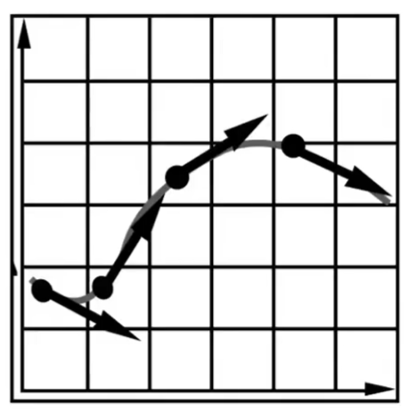
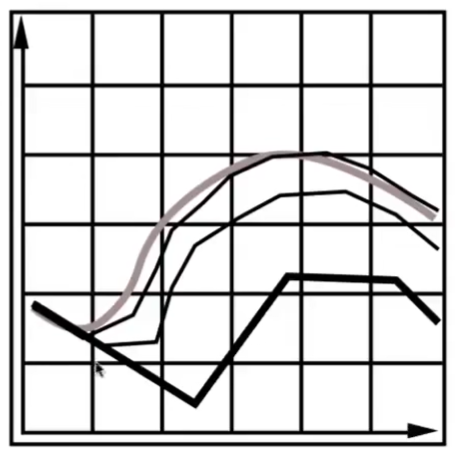
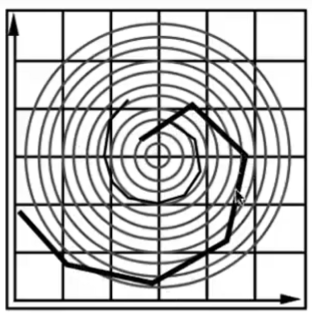
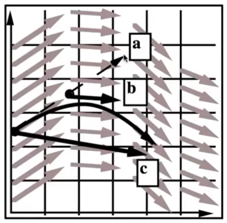
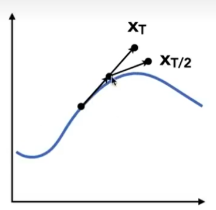

粒子系统 Particle System
基于粒子系统的动画的主要过程：
- 创建粒子
- （难点）计算每个粒子受到的力
- （难点）更新粒子的位置和速度
- 移除不需要的粒子
- 渲染粒子
粒子建模要考虑的力有：
- 动力：重力、吸引力、电磁力、斥力
- 阻力：摩擦力、粘滞力
- 碰撞
✅ 模拟和渲染是两个独立的步骤
粒子系统的更多应用场景：水、星系、鸟群、分子结构
📌 具体内容在Lecture 22
单个粒子系统
要解决的问题
- 场景一：
已知：初始的 position x0，任意时刻的速度
求：某个时间刻的 position
- 场景二：
已知：初始的 position X0，速度场，即在任意 position 上的速度
求：某时刻的 position

常微分方程
ODE = Ordinary Differential Equation
$$ \frac{dx}{dt} = \dot x = v(x, t) $$
已知\(\dot x\)，求x
一阶常微分方程的特点：
- 只涉及一阶微分
- 不存在对其它变量的微分
欧拉方法
显式欧拉方法
根据上一时刻的位置、速度、加速度，根据定义求这一时刻的位置、速度、加速度。
$$
x^{t+\Delta t} = x^t + \Delta t \dot x^t \\
\dot x^{t+\Delta t} = \dot x^t + \Delta t \ddot x^t
$$
❗ =右边的都是上一时刻的量。=左边的都是当前时刻的量。
💡 连续问题离散化，这种思想在课程中大量运用
❓ 问：为什么有第二个公式？如果是问题一，\(\dot x^t\)已知。如果是问题二，\(\dot x^t\)跟\(x^t\)有关，应该用不到\(\ddot x^t\)。而且\(\ddot x^t\)未知，用到了也没法算
答：因为问题描述那里说的不准确。已知的是点在某个时刻/位置上受到的力。力->加速度->速度->位置。
特点：
- 简单，直观迭代。
- 误差：用不同大小的步长\(\Delta t\)会得到不同的结果。步长越小越精确。
 - 不稳定，且不稳定性与步长无关

👆 不管取多大的步长，最后一定会离开这个螺旋形的速度场。
✅ 误差不是严重的问题，因为可以通过减小步长来降低误差。但不稳定性是严重的问题，因为不管取什么步长，最后结果一定会离真实情况越来越远。
✅ 误差是一阶，步长再小也是一阶。
❓ 为什么有些情况下一定会不稳定，不稳定的本质原因是什么？
用数值方法解微分方程的共性问题：
- 误差 VS 精度
- 不稳定， divergence
❓ 所以不稳定的来源是数值方法而不是微分方程？
💡 我的思考：
有点像花书里的"病态问题'。输入的微小改变导到输出的巨大变化。
也可以理解为函数在不同方向上的敏感度差别很大.
后面介绍的这些方法都是在对抗前面提到的不稳定性。
中点法 Midpoint Method

- 当前点为\(x(t)\)，用欧拉方法计算下一个时间步的位置，称为a点
$$ x_a = x(t+\Delta t) = x(t) + \Delta t\cdot \dot x(t) $$
- 取\(x(t)\)与a的中点，称为b点或mid点
$$ x_{mid} = \frac{x(t) + x(t+\Delta t)}{2} \\ = x(t) + \frac{\Delta t}{2}\cdot \dot x(t) $$
- 取mid点位置的速度作为x(t)点的速度
$$ \dot x'(t) = \dot x_{mid}(t) $$
- 用\(\dot x'(t)\)再算一次欧拉，得到c点
$$ x_c = x(t+\Delta t) = x(t) + \Delta t\cdot \dot x'(t) $$
直观上看，很奇怪中点法更准确。展开后发现，中点法比原方法多了二次项函
$$ x(t+\Delta t) = x(t) + \Delta t\cdot \dot x(t) + \frac{(\Delta t)^2}{2}\ddot x(t) $$
Adaptive Step Size 自适应步长
- 定义初始的\(\Delta t\)为\(\Delta_0\)
- 用欧拉方法计算\(x^{t+\Delta_0}\)。即用\(\Delta_0\)算一遍欧拉方法
$$ X_T = x(t) + \Delta_0\cdot \dot x(t) $$ 3. 用欧拉方计算\(x^{t+2*\frac{1}{2}\Delta_0}\)。 即用\(2*\frac{1}{2}\Delta_0\)算两遍欧拉方法
$$ X_{mid} = x(t) + \frac{\Delta_0}{2} \cdot \dot x(t) \\ X_{T/2} = x_{mid} + \frac{\Delta_0}{2} \cdot \dot x_{mid} $$

- 比较\(X_T\)和\(X_{T/2}\)，如果两者差别比较大，取后者，且将\(delta_0\)更新为\(\frac{1}{2}delta_0\)。
Implicit （隐式的） Euler Method
原问题：已知\(x^t\)和\(\dot x^t\)，求 \(x^{t+\Delta t}\)和\(dot x^{t+\Delta t}\)
$$
x^{t+\Delta t} = x^t + \Delta t \dot x^t \\
\dot x^{t+\Delta t} = \dot x^t + \Delta t \ddot x^t
$$
转化为新问题：
$$
x^{t+\Delta t} = x^t + \Delta t \dot x^{t+\Delta t} \\
\dot x^{t+\Delta t} = \dot x^t + \Delta t \ddot x^{t+\Delta t}
$$
部分已知，部分未知，变成了一个优化问题。
我的思考：
显式和隐式，有种FK和IK的感觉。利用被依赖项计算依赖项，用数学公式。利用依赖项计算被依赖项，用优化问题近似。
优点：稳定。
❓ 隐式也是一阶，为什么比显式的稳定？
衡量各种欧拉方法的稳定性
指标：
- 局部截断误差：每一步会产生多少误差
- 全局积累误差
重要的不是指标的数值，而是这些指标与\(\Delta t\)的关系。
例如 Implicit Euler Method方法的稳定性为1阶。因为的它的局部截断误差是\(O(h^2)\)，全局累积误差是O(h)。
O(h)的意思是，当步长减小到一半，那它的误差的期望也会减小到一半。
\(O(h^2)\)的意思是，当步长减小到一半，那它的误差的期望也会减小到1/4。
阶数越高越好。
Runge-kutta 方法
这是一类方法。
欧拉方法用于解线性ODE（常微分方程），而此类方法能够解非线性的ODE。
❓ 线性ODE和非线性的ODE什么区别？
其中Rk 4方法应用最广泛. 4代表4阶
已知：
$$ \frac{dy}{dt} = f(t, y) \\ y(t_0) = y_0 $$
RK 4解法:
$$ y_{n+1} = y_n + \frac{1}{6}h(k_1 + 2k_2 + 2k_3 + k_4) \\ t_{n+1} = t_n + h $$
说明：
这个公式里的h就是\(\Delta t\)
()中的四个加法项是基于中点法的中间结果，系数是精心设计的
🔎 数值分析课程会对这个算法有详细的解释
如果说中点法是泰勒展开的即视感，那么这里的公式是对泰勒展开更精确的模拟
问：为什么说RK系列擅长非线性呢？都是以欧拉方法为基础，在哪里引入的非线性的设计？
答：1阶是处理线性问题，高于1阶才能处理非线性。理解类似泰勒公式的近似截断。
Position Based / Verlet 积分
原理：只是通过调整位置使得能够满足某些限制，简化弹簧的物理推导过程
优点：快、简单
缺点：不是基于真实的物理过程可能会有错误
本文出自CaterpillarStudyGroup，转载请注明出处。
https://caterpillarstudygroup.github.io/GAMES101_mdbook/